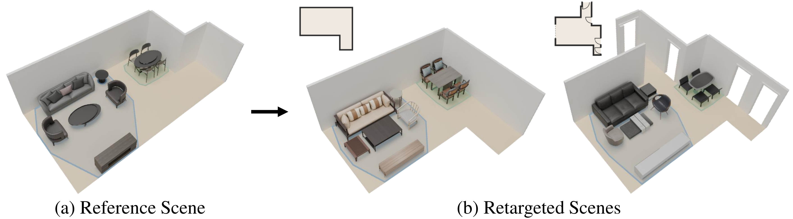
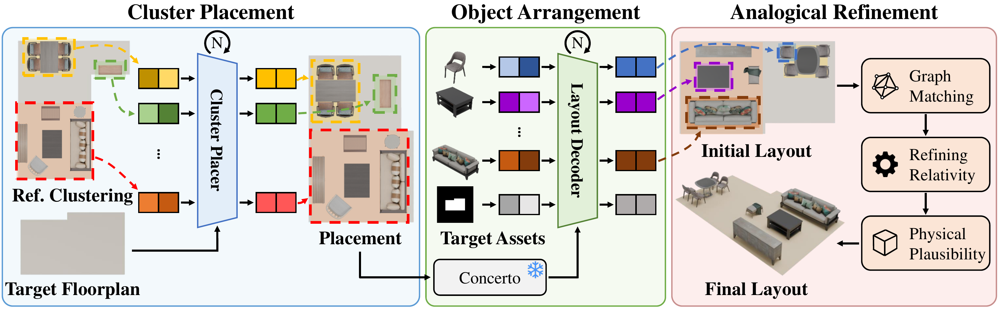
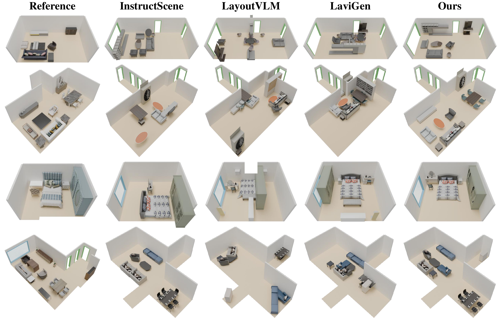
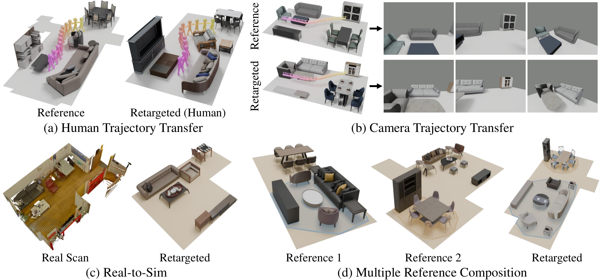

Interactive simulations of embodied AI or spatial computing applications build on realistic 3D scenes that support daily activities. However, sparse, irregular layout structures impose scene-specific physical constraints, making it hard to define a generalizable framework for generating similar functional context. We formalize Scene Retargeting as stably transferring the semantically coherent spatial organization across layouts, rather than relying on textual descriptions or pairwise relationships. Our cluster-wise transfer flexibly handles mismatched object instances and adapts to distinctive floor plans. We optimize to preserve the rich semantic context of individual clusters by respecting the spatial distribution of foundation features. We can then impose physical constraints to refine wall contacts, pairwise alignment, or clear passageways and openings. Our framework outperforms state-of-the-art methods on layout generation on the 3D-FRONT dataset, and demonstrates downstream applications including real-to-sim transfer, analogical trajectory transfer, and multi-reference composition.

Method Overview. In stage 1 (Cluster Placement), functional clusters decomposed from the reference scene are placed onto the target floor plan by a learned cluster placer. In stage 2 (Object Arrangement), target object tokens cross-attend to Concerto features of the transferred reference layout within the layout decoder to assign object-level poses. Stage 3 (Analogical Refinement) matches objects across scenes, optimizes pairwise relations and wall clearances measured on the reference, and enforces physical validity to produce the final 3D layout.

Qualitative comparison. Given the same reference scene and target room, baselines receive the reference through the channel they accept (a verbalized instruction or the target floor plan). Our hierarchical framework preserves fine-grained spatial relationships of the reference across diverse room geometries while strictly respecting physical constraints.

Downstream applications. Our framework supports various downstream scenarios without fine-tuning. (a) Human and (b) camera trajectories authored in a reference scene carry over to retargeted scenes without manual re-authoring. (c) A single real-world ScanNet++ scan is instantiated across different synthetic floor plans and object inventories. (d) Functional clusters drawn from multiple reference rooms are composed into a single target layout.